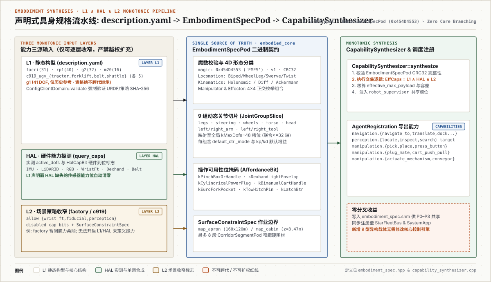

定位与上下游边界
声明式具身规格层以
EmbodimentSpecPod（src/embodied_core/include/embodied_core/embodiment_spec.hpp）作为单机结构与能力判定的唯一权威真源：上游从
configs/robots/*/description.yaml
解析静态构型定义（L1），在启动期叠加
IHalDriver
硬件实测能力（HAL）与场景清单策略开关（L2），向下游
4+1 实时进程与上层规划器输出统一能力掩码。平台现役
9
类跨形态机器人借此共用同一套原生二进制程序，无需为新增构型复制控制分支。

EmbodimentSpecPod
二进制契约结构
EmbodimentSpecPod 在编译期强制通过
std::is_trivially_copyable_v 断言，由
robot_supervisor 在启动期解析后写入共享内存槽位
embodiment_spec.shm，尾部携带 IEEE CRC32 校验码（魔数
0x454D4553 "EMES"，版本号
1），供所有子进程只读映射使用：
- 四维构型枚举：通过
LocomotionArchetype、KinematicsModelKind、ManipulatorArchetype与EffectorArchetype精确刻画双足、轮腿、全向四轮转向、纯底盘与多臂/灵巧手等任意本体形态。 - 九组动态关节切片（
JointGroupSlice）：显式映射九大关节组在全局48轴数组中的实际索引下标、默认控制模式（1=PositionPd、2=VelocityPd）与 PD 增益（每组上限kMaxGroupDofs = 16，联合受控组上限kMaxControlledGroupDofs = 32）。 - 物理几何与位掩码：封装
ChassisGeometrySpec（轴距、轮距、最小转弯半径、安全包络半径与限速）、ArrivalSpecPod（常规到点与靠泊停稳容差）、额定负载、作业高度范围[reach_z_min_m, reach_z_max_m]，以及操作可用性位掩码AffordanceBit与硬件能力位掩码HalCapBit。
查看 EmbodimentSpecPod 枚举值、9 组关节切片与位掩码全量字典
| 结构维度 | 字段 / 枚举类型 | 全量枚举成员与含义 |
|---|---|---|
| 移动构型 | LocomotionArchetype |
kNone、kBipedPolicy、kWheelLegHybrid、kSwerve4WS、kChassisTwist |
| 底盘运动学 | KinematicsModelKind |
kHolonomic（全向）、kDifferential（差速）、kAckermann（阿克曼） |
| 操作机构 | ManipulatorArchetype |
kNone、kScalarActuator1D、kPrismaticLift1D、kDualArmTorsoIk |
| 末端执行器 | EffectorArchetype |
kNone、kParallelJaw2Dof、kDexhand12Dof、kMechanism1Dof |
| 九组关节切片 | JointGroupSlice |
legs、steering、wheels、torso、head、left_arm、right_arm、left_tool、right_tool |
| 操作能力掩码 | AffordanceBit |
kPinchBoxOrHandle、灵巧手包络
kDexhandLightEnvelop、圆柱插头
kCylindricalPowerPlug、双臂推车
kBimanualCartHandle、欧标叉孔
kEuroForkPocket、牵引销钩
kTowHitchPin、按钮/舱门锁扣
kLatchButtonOrDoor |
| 硬件实测掩码 | HalCapBit |
IMU、3D 雷达、RGB 相机、左右腕六维力 kWristFtLeft /
kWristFtRight、灵巧手触觉
kDexhandTactile、特装机构 kMechanism、传送带
kConveyorBelt、原生速度底盘
kNativeTwistChassis |
全仓 9
类机器人构型一览
经对仓库 configs/robots/*/description.yaml
逐一读取核对，平台当前完整建档的 9 型构型参数如下：
配置名称（model_id） |
驱动关节数 | 关节分组分布 | 移动与操作构型 | 典型场景职责 |
|---|---|---|---|---|
facri（facri_native_31） |
31 |
legs=12、torso=3、arms=14、tools=2 |
kBipedPolicy + kDualArmTorsoIk |
主工厂四机产线与 C919 机坪轮挡/插头操作 |
rp1（roboparty_rp1_cabin_attendant） |
40 |
legs=12、torso=2、arms=14、left/right_hand=12 |
kBipedPolicy + kDualArmTorsoIk +
kDexhand12Dof |
C919 客舱迎宾、手提行李协助与客舱服务 |
g2（agibot_g2_crs_omnipicker） |
32 |
steering=4、wheels=4、torso=5、arms=14、head=3、tools=2 |
kSwerve4WS（kHolonomic）+
kDualArmTorsoIk |
机坪高稳态推车转运与舱外精细操作 |
m20（deeprobotics_m20） |
16 |
legs=12、wheels=4 |
kWheelLegHybrid +
ManipulatorArchetype::kNone |
机坪周边自主巡视、FOD 外来物检测与推出警戒 |
c919_ugv_tractor |
5 |
wheels=4、hitch=1 |
kChassisTwist（kAckermann）+
kTowHitchPin |
行李拖车与机务拖把牵引作业（AU_02） |
c919_ugv_forklift |
5 |
wheels=4、forks=1 |
kChassisTwist（kDifferential）+
kPrismaticLift1D |
重型托盘与航材箱叉举转运（AU_03，支持叉孔对接） |
c919_ugv_belt |
5 |
wheels=4、boom=1 |
kChassisTwist（kDifferential）+
kScalarActuator1D + 传送带 |
升降大臂与货舱行李连续传输（GS_02） |
c919_ugv_shuttle |
5 |
wheels=4、doors=1 |
kChassisTwist（kAckermann）+
kScalarActuator1D |
机坪摆渡转运与滑门开闭控制（AU_01） |
g1（g1_29_revo2） |
41 |
body=29（locomotion=15、arms=14）+
hands=12 |
历史双足 + 双手构型参考档案 | 仅作历史参考：旧 G1
资格与标定绝对不跨代继承给新 FACRI |
三层能力单调收敛（L1 ∧ HAL ∧ L2）与校验链
单机实际生效能力由
src/robot_app/algorithms/common/capability_synthesizer.cpp
与 ConfigClientDomain 按单调交集规则严格收敛生成：
- 静态声明层（
L1）：由ConfigLoader解析对应description.yaml的关节数、运动学链、夹爪形态与默认策略限位；robot_task_agent内部调用ConfigClientDomain::validate()复核实际加载 URDF 与策略文件的 SHA-256 摘要是否与清单一致，不匹配即拒绝激活。 - 硬件实测层（
HAL）：robot_body_rt向所加载驱动调用IHalDriver::query_hardware_caps()获取物理实测能力位掩码（如腕部六维力传感器是否真正在线、自由度计数是否足额）；凡L1声明而HAL实测缺失的能力位自动清零。 - 场景策略收窄层（
L2）：由场景清单注入三项显式单向收窄标志：policy_allow_wrist_ft_admittance、policy_allow_fiducial_align与policy_allow_perception（及保留禁用掩码disabled_cap_bits）。L2仅可关闭特定功能（如在factory.json中暂时关闭wrist_ft_admittance_enabled），绝对禁止凭空开启L1或HAL不支持的物理能力。
作业表面几何与窄走廊约束（SurfaceConstraintSpec）
在 C919 等双高度复合场景中，同一个控制器既需要在开阔机坪
map_apron（160 m × 120 m，nominal_z_m = 0.0）机动，又需要将客舱机器人限定在
z = 3.47 m、走廊半宽仅 0.25 m 的客舱通道
map_cabin 内移动。EmbodimentSpecPod 内嵌的
SurfaceConstraintSpec 将作业表面 ID、二维边界
[xmin, xmax, ymin, ymax]、高程容差
[nominal_z_m ± z_tolerance_m] 以及最多 8 段
CorridorSegmentPod（x_min_m、x_max_m、y_half_width_m）直接打包送入单机导航与规划进程，在局部路径采样前先期封堵越界或跌落风险。